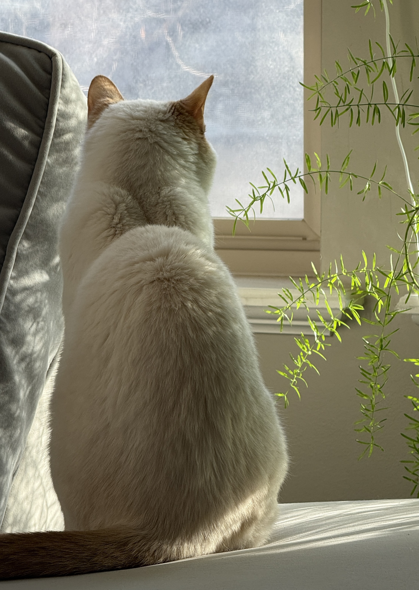
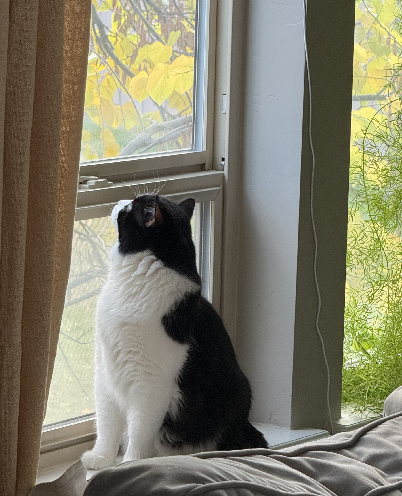

Iris Lin
Computer Science
Full-Stack Web Development
home
Computer Science | Full Stack Web Development
I'm Iris! I'm a student at Utah Valley University studying computer science with a full-stack web development concentration and I'm planning to graduate in May of 2027. I'm currently learning Swift and SwiftUI and I'm hoping to learn React, Tailwind, and more!
Take a look at my projects to see what I'm currently working on!
projects
Enhanced To-Do List App
Swift
This mobile task management app has a few advanced features beyond traditional to-do lists, including custom categorization, priority systems, external calendar integration, and more!
Algorithms Solutions Portfolio
C++ | Python
This portfolio contains solutions and algorithms I've created from ProjectEuler during my middle school years at an after-school coding school.
other
a vlog from two years ago
my cats
 